전기기사 (2009-07-26 기출문제)
1과목: 전기자기학
1. 반지름이 각각 2㎝, 4㎝인 두 중공 동심 도체구가 있고, 구 사이의 공간은 진공이다. 이때 정전용량 C는 약 몇 [pF]인가?
- 4.45[pF]
- 8.90[pF]
- 13.35[pF]
- 17.80[pF]
(정답률: 63%)

2. 무한장 솔레노이드에 전류가 흐를 때 발생되는 자장에 관한 설명으로 옳은 것은?
- 내부 자장은 평등자장이다.
- 외부와 내부의 자장의 세기는 같다.
- 외부 자장은 평등자장이다.
- 내부 자장의 세기는 0이다.
(정답률: 72%)
3. N회 감긴 환상 코일의 단면적이 S[m3]이고, 평균 길이가 l[m]이다. 이 코일의 권수를 반으로 줄이고 인덕턴스를 일정하게 하려고 할 때, 다음 중 옳은 것은?
- 단면적을 2배로 한다.
- 길이를 1/4로 한다.
- 전류의 세기를 4배로 한다.
- 비투자율을 2배로 한다.
(정답률: 79%)
4. 평등 자계 H0 중에 매우 얇은 철판 (비투자율 μs)을 자계와 직각으로 놓았을 때의 철판 내 중앙부의 자계 H1과 평행으로 놓았을 때의 철판 내 중앙부 자계 H2의 비를 구하면?
- 1/μs
- 1
- μs
- μs-1
(정답률: 52%)
5. 극판간격 d[m], 면적 S[m3], 유전율 ℇ[F/m]이고, 정전용량이 C[F]인 평행판 콘덴서에 v=Vmsinωt[V]의 전압을 가할 때의 변위 전류[A]는?
- ωCVmcosωt
- CVmsinωt
- -CVmsinωt
- -ωCVmcosωt
(정답률: 71%)
6. 전계 E[V/m] 및 자계 H[AT/m]인 전자파가 자유공간 중을 빛의 속도로 전파될 때 단위시간에 단위면적을 지나는 에너지는 몇 [W/m3]인가?(단, C는 빛의 속도를 나타낸다.)
- EH
- EH2
- EH2H
- (1/2)CE2H2
(정답률: 83%)
7. 0.2[Wb/m2]의 평등 자계 속에 자계와 직각 방향으로 놓인 길이 90[㎝]의 도선을 자계와 30º 방향으로 50[m/s]의 속도로 이동시킬 때, 도체 양단에 유기되는 기전력[V]은?
- 0.45[V]
- 0.9[V]
- 4.5[V]
- 9.0[V]
(정답률: 71%)
8. 내경의 반지름이 1[mm], 외경의 반지름이 3[mm]인 동축케이블의 단위 길이 당 인덕턴스는 약 몇 [μH/m]인가? (단, 이때 μr=1이며, 내부 인덕턴스는 무시한다.)
- 0.1[μH/m]
- 0.2[μH/m]
- 0.3[μH/m]
- 0.4[μH/m]
(정답률: 59%)
9. 히스테리시스곡선의 기울기는 다음의 어떤 값에 해당 하는가?
- 투자율
- 유전율
- 자화율
- 감자율
(정답률: 67%)
10. “줄열은 자유전자가 ( )사이의 공간을 이동하여 서로 충돌 하거나 ( )와의 충돌 때문이다.” ( )안에 공통적으로 들어갈 내용으로 알맞은 것은?
- 핵
- 원자
- 분자
- 전자
(정답률: 58%)
11. 맥스웰의 전자방정식 중 패러데이 법칙에서 유도된 식은? (단, D : 전속밀도, ρv: 공간 전하밀도, B : 자속밀도, E : 전계의 세기, J : 전류밀도, H : 자계의 세기)
- div D = ρv
- div B = 0
- ∇×H = J＋(∂D)/(∂t)
- ∇×E = -[(∂D)/(∂t)]
(정답률: 66%)
12. 10[mW], 20[KHz]의 송신기가 자유공간 내에서 사방으로 균일하게 전파를 발사할 때 송신기로부터 10[km] 지점에서의 포인팅 벡터는 약 몇 [W/m2]인가?
- 4×10-11[W/m2]
- 8×10-11[W/m2]
- 4×10-12[W/m2]
- 8×10-12[W/m2]
(정답률: 39%)
13. 공기 중에 그림과 같이 가느다란 전선으로 반경 a인 원형코일을 만들고, 이것에 전하 Q가 균일하게 분포하고 있을 때, 원형 코일의 중심축상에서 중심으로부터 거리 x만큼 떨어진 P점의 전계의 세기는 몇 [V/m]인가?
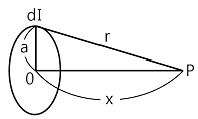
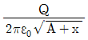
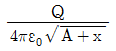
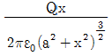
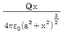
(정답률: 44%)
14. 용량계수와 유도계수에 대한 표현 중에서 옳지 않은 것은?
- 용량계수는 정(＋)이다.
- 유도계수는 정(＋)이다.
- qrs=qsr
- 전위계수를 알고 있는 도체계에서는 qrr, qrs를 계산으로 구할 수 있다.
(정답률: 67%)
15. 자기 인덕턴스 L[H]인 코일에 전류 I[A]를 흘렸을 때, 자계의 세기가 H[A/m]이다. 이 코일에 전류 I/2[A]를 흘리면 저장되는 자기에너지 밀도[J/m3]는?
- (1/2)LI2
- (1/8)LI2
- (1/2)μ0H2
- (1/8)μ0H2
(정답률: 39%)
16. X＞0인 영역에 ℇ1=3인 유전체, X0인 영역에 ℇ2=5인 유전체가 있다. 유전율 ℇ2인 영역에서 전계 E2=20ax＋30ay-40az[V/m]일 때, 유전율 ℇ1인 영역에서의 전계 E1은 몇 [V/m]인가?
- 100/3ax＋30ay-40az
- 20ax＋30ay-40az
- 100ax＋30ay-40az
- 60ax＋30ay-40az
(정답률: 72%)
17. 길이가 1㎝, 지름이 5mm인 동선에 1A의 전류를 흘렸을 때 전자가 동선을 흐르는데 걸린 평균 시간은 대략 얼마인가? (단, 동선에서의 전자의 밀도는 1×1028[개/m3]라고 한다.
- 3초
- 31초
- 314초
- 3147초
(정답률: 66%)
18. 유전율이 ℇ1 과 ℇ2인 두 유전체가 경계를 이루어 접하고 있는 경우 유전율이 ℇ1인 영역에 전하 Q가 존재할 때 이 전하에 작용하는 힘에 대한 설명으로 옳은 것은?
- ℇ1＞ℇ2 인 경우 반발력이 작용한다.
- ℇ1＞ℇ2 인 경우 흡입력이 작용한다.
- ℇ1과 ℇ2 값에 상관없이 반발력이 작용한다.
- ℇ1과 ℇ2 값에 상관없이 흡입력이 작용한다.
(정답률: 30%)
19. 어떤 대전체가 진공 중에서 전속이 Q[C]이었다. 이 대전체를 비유전률 10인 유전체 속으로 가져갈 경우에 전속은 몇 Q[C]이 되겠는가?
- Q
- 10Q
- Q/10
- 10ℇ0Q
(정답률: 65%)
20. 그림과 같은 2동심 구도체에서 도체 1의 전하가 Q1=4πε0[C], 도체 2의 전하가 Q2=0[C]일 때, 도체 1의 전위는 몇 [V]인가? (단, a=10㎝, b=15㎝, c=20㎝라 한다.)
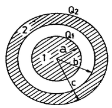
- 1/12[V]
- 13/60[V]
- 25/3[V]
- 65/3[V]
(정답률: 49%)
2과목: 전력공학
21. 전력 손실이 없는 송전선로에서 서지파(진행파)가 진행하는 속도는? (단, L : 단위 선로 길이당 인덕턴스, C : 단위선로 길이당 커패시턴스이다.)
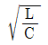
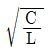
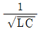
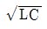
(정답률: 68%)
22. 다음 중 가공 지선의 설치 목적으로 볼 수 없는 것은?
- 유도뢰에 대한 정전 차폐
- 전압강하의 방지
- 직격뢰에 대한 차폐
- 통신선에 대한 전자유도 장해 경감
(정답률: 68%)
23. 불평형 3상 전압을 Va, Vb, Vc라 하고,
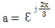
라 할 때, Vx=1/3(Va＋aVb＋a2Vc)이다. 여기서 Vx는?- 정상전압
- 단락전압
- 영상전압
- 지락전압
(정답률: 74%)
24. 다음 중 무부하시의 충전전류 차단만이 가능한 것은?
- 진공 차단기
- 유입 차단기
- 단로기
- 자기 차단기
(정답률: 76%)
25. 다음 중 재점호가 가장 일어나기 쉬운 차단 전류는?
- 동상전류
- 지상전류
- 진상전류
- 단락전류
(정답률: 67%)
26. 3상 배전선로의 말단에 지상역률 80%, 160kW 인 평형 3상 부하가 있다. 부하점에 전력용 콘덴서를 접속하여 선로손실을 최소가 되게 하려면 전력용 콘덴서의 필요한 용량[kVA]은? (단, 부하단 전압은 변하지 않는 것으로 한다.)
- 100[kVA]
- 120[kVA]
- 160[kVA]
- 200[kVA]
(정답률: 68%)
27. 다음 중 동작 시간에 따른 보호 계전기의 분류와 그 설명으로 틀린 것은?
- 순한 시 계전기는 설정된 최소 작동 전류 이상의 전류가 흐르면, 즉시 작동하는 것으로 한도를 넘은 양과는 관계가 없다.
- 정한 시 계전기는 설정된 값 이상의 전류가 흘렀을 때 작동전류의 크기와는 관계없이 항상 일정한 시간 후에 작동하는 계전기이다.
- 반한 시 계전기는 작동시간이 전류값의 크기에 따라 변하는 것으로 전류값이 클수록 느리게 동작하고 반대로 전류값이 작아질수록 빠르게 작동하는 계전기이다.
- 반한시성 정한시 계전기는 어느 전류값까지는 반한시성이지만 그 이상이 되면 정한시로 작동하는 계전기이다.
(정답률: 71%)
28. 송전용량계수법에 의하여 송전선로의 송전용량을 결정할 때 수전 전력의 관계를 옳게 표현한 것은?
- 수전전력의 크기는 송전거리와 송전전압에 비례한다.
- 수전전력의 크기는 송전거리에 비례하고 수전단 선간전압의 제곱에 비례한다.
- 수전 전력의 크기는 송전거리에 반비례하고 수전단 선간전압에 비례한다.
- 수전전력의 크기는 송전거리에 반비례하고 수전단 선간전압의 제곱에 비례한다.
(정답률: 54%)
29. 다음 중 송전선로에 복도체를 사용하는 이유로 가장 알맞은 것은?
- 선로를 뇌격으로부터 보호한다.
- 선로의 진동을 없앤다.
- 철탑의 하중을 평형화 한다.
- 코로나를 방지하고 인덕턴스를 감소시킨다.
(정답률: 83%)
30. 다음 중 수차의 캐비테이션의 방지책으로 옳지 않은 것은?
- 과부하 운전을 가능한 한 피한다.
- 흡출수두를 증대시킨다.
- 수차의 비속도를 너무 크게 잡지 않는다.
- 침식에 강한 금속재료로 러너를 제작한다.
(정답률: 73%)
31. 출력 30000 kWh의 화력발전소에서 6000 kcal/㎏의 석탄을 매시간에 15톤의 비율로 사용하고 있다고 한다. 이 발전소의 종합 효율은 약 몇 [%]인가?
- 28.7[%]
- 31.7[%]
- 33.7[%]
- 36.7[%]
(정답률: 63%)
32. 전력 계통의 안정도 향상 대책으로 직렬 리액턴스를 적게 하기 위한 방법이 아닌 것은?
- 발전기의 리액턴스를 적게 한다.
- 변압기의 리액턴스를 적게 한다.
- 복도체를 사용한다.
- 단락비가 작은 발전기를 사용한다.
(정답률: 63%)
33. 복도체의 선로가 있다. 소도체의 지름이 8㎜, 소도체 사이의 간격이 40㎝ 일 때 등가 반지름[㎝]은?
- 2.8㎝
- 3.6㎝
- 4.0㎝
- 5.7㎝
(정답률: 48%)
34. 임피던스 Z1, Z2 및 Z3를 그림과 같이 접속한 선로의 A쪽에서 전압파 E가 진행해 왔을 때 접속점 B에서 무반사로 되기 위한 조건은?
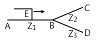
- Z1=Z2＋Z3
- 1/Z3=1/Z1＋1/Z2
- 1/Z1=1/Z2＋1/Z3
- 1/Z2=1/Z1＋1/Z3
(정답률: 71%)
35. 원자로에서 핵분열로 발생한 고속중성자를 열중성자로 바꾸는 작용을 하는 것은?
- 제어재
- 냉각재
- 감속재
- 반사체
(정답률: 63%)
36. 설비 A가 150kW, B 가 350kW, 수용률이 각각 0.6, 0.7일 때 합성최대전력이 279kW이면 부등률은?
- 1.1
- 1.2
- 1.3
- 1.4
(정답률: 74%)
37. 송전전압 154kV, 주파수 60Hz, 선로의 작용용량 0.01μF/㎞, 길이 100km인 1회선 송전선을 충전시킬 때 자기여자를 일으키지 않는 최소발전기용량은 약 몇 [kVA]인가? (단, 발전기의 단락비는 1.1이고 포화율은 0.1이라고 한다.)
- 5162[kVA]
- 8941[kVA]
- 15486[kVA]
- 26822[kVA]
(정답률: 39%)
38. 주변압기 등에서 발생하는 제5고조파를 줄이는 방법은?
- 전력용 콘덴서에 직렬리액터를 접속
- 변압기 2차측에 분로리액터 연결
- 모선에 방전코일 연결
- 모선에 공심 리액터 연결
(정답률: 74%)
39. 그림과 같이 일직선 배치로 완전 연가한 경우의 등가 선간 거리는?
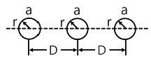
- 3√2 D
- √2 D
- √D
- √3 D
(정답률: 78%)
40. 전원으로부터의 합성임피던스가 0.25%(10000kVA기준)인 곳에 설치하는 차단기의 용량[MVA]은?
- 250
- 400
- 2500
- 4000
(정답률: 56%)
3과목: 전기기기
41. 변압기의 임피던스 전압이란?
- 정격 전류시의 2차측 단자전압이다.
- 변압기의 1차를 단락, 1차에 1차 정격전류와 같은 전류를 흐르게 하는데 필요한 1차 내압이다.
- 정격 전류가 흐를 때의 변압기 내의 전압 강하이다.
- 변압기의 2차를 단락, 2차에 2차 정격전류와 같은 전류를 흐르게 하는데 필요한 2차 전압이다.
(정답률: 72%)
42. 발전기 권선의 층간 단락 보호에 가장 적합한 계전기는?
- 과부하 계전기
- 차동 계전기
- 온도 계전기
- 접지 계전기
(정답률: 73%)
43. 주파수가 일정한 3상 유도 전동기의 전원 전압이 80%로 감소하였다면, 토크의 변화는? (단, 회전수는 일정하다고 가정한다.)
- 64%로 감소
- 80%로 감소
- 89%로 감소
- 변화 없음
(정답률: 72%)
44. 변압기의 권수비 a=6600/220, 철심의 단면적 0.02m2, 최대 자속밀도 1.2[Wb/m2]일 때, 1차 유기기전력은 약 몇 [V]인가? (단, 주파수는 60Hz이다.)
- 1407[V]
- 3521[V]
- 42198[V]
- 49814[V]
(정답률: 69%)
45. 효율 80%, 출력 10kW인 직류발전기의 고정손실이 1300W이면 가변손실은?
- 1000W
- 1200W
- 1500W
- 2500W
(정답률: 65%)
46. 100V, 10kW, 1000rpm의 분권 전동기를 부하전류 102A의 정격 속도로 운전하고 있다. 지금 전기자에 직렬로 저항 0.4Ω을 접속하고, 전과 동일한 토크로 운전하면 약 몇 [rpm]으로 회전 하겠는가? (단, 전기자 및 분권 계자회로의 저항은 각각 0.⑤Ω과 50Ω이다.)
- 560[rpm]
- 570[rpm]
- 580[rpm]
- 590[rpm]
(정답률: 47%)
47. 권선형 유도 전동기에서 2차 저항을 변화시켜 속도를 제어하는 경우 최대토크는?
- 최대 토크가 생기는 점은 슬립에 비례한다.
- 최대 토크가 생기는 점은 슬립에 반비례한다.
- 2차 저항에만 비례한다.
- 항상 일정하다.
(정답률: 66%)
48. 다음 중 3상 직권 정류자 전동기의 설명으로 틀린 것은?
- 고정자와 회전자 권선 기자력이 동위상일 때 토크가 발생한다.
- 고정자와 회전자 권선이 역위상일 때 브러시는 단락 한다.
- 브러시가 회전 방향으로 이동하면 철손이 증가한다.
- 속도제어는 브러시 위치 이동으로 한다.
(정답률: 36%)
49. 일반적인 직류기 전기자 권선법에 대한 설명 중 틀린 것은?
- 정류 개선을 위한 단절권 사용
- 대부분 회전자 권선은 2층권
- 각 슬롯에 다른 두 코일변 삽입
- 환상권, 개로권 사용
(정답률: 68%)
50. 4극 60Hz인 3상 유도기가 1750rpm으로 회전하고 있을 때 전원의 b상과 c상을 바꾸면 이때의 슬립(slip)은 약 얼마인가?
- 2.03
- 1.97
- 1.⑤
- 0.83
(정답률: 51%)
51. 유도 전동기의 1차 전압 변화에 의한 속도 제어 시 SCR을 사용하여 변화시키는 것은?
- 주파수
- 토크
- 전류
- 위상각
(정답률: 71%)
52. 용량 5kW, 3300/220의 변압기에 전부하를 걸어 줄 때, 역율 100%에서 효율이 96.2%이다. 이 변압기의 입력은?
- 5.0[kW]
- 5.2[kW]
- 5.4[kW]
- 5.8[kW]
(정답률: 65%)
53. 용량 1[kVA], 3000/200[V]의 단상 변압기를 단권 변압기로 결선해서 3000/3200[V]의 승압기로 사용할 때 그 부하용량은?
- 16[kVA]
- 15[kVA]
- 1[kVA]
- 1/16[kVA]
(정답률: 55%)
54. 4극, 7.5[kW], 200[V], 60[Hz]인 3상 유도 전동기가 있다. 전부하에서 2차 입력이 7950[W]이다. 이 경우 2차 효율[%]은 약 얼마인가? (단, 기계손은 130[W]이다.)
- 93[%]
- 94[%]
- 95[%]
- 96[%]
(정답률: 45%)
55. 다음 중 반작용 전동기(반동 전동기)의 설명으로 옳은 것은?
- 전기자에 뒤진 전류가 흐르면 전기자 반작용은 증자작용을 한다.
- 전기자에 앞선 전류가 흐르면 전기자 반작용은 증자작용을 한다.
- 전기자에 뒤진 전류가 흐르면 전기자 반작용은 감자작용을 한다.
- 전기자에 뒤진 전류가 흐르면 전기자 반작용은 교차자화 작용을 한다.
(정답률: 66%)
56. 2대의 동기 발전기가 병렬 운전하고 있을 때 동기화 전류가 흐르는 경우는?
- 기전력의 크기에 차가 있을 때
- 기전력의 위상에 차가 있을 때
- 기전력의 파형에 차가 있을 때
- 부하 분담에 차가 있을 때
(정답률: 67%)
57. 다음 중 3상 유도전동기의 슬립이 S＜0인 경우를 설명한 것으로 틀린 것은?
- 동기속도 이상이다.
- 유도 발전기로 사용된다.
- 유도 전동기 단독으로 동작이 가능하다.
- 속도를 증가시키면 출력이 증가한다.
(정답률: 66%)
58. 다음 중 동기 전동기에서 동기 와트로 표시되는 것은?
- 출력
- 토크
- 1차 입력
- 동기 속도
(정답률: 52%)
59. 다이오드를 사용한 정류회로에서 여러 개를 직렬로 연결하여 사용 할 경우 얻는 효과는?
- 과전류로부터 보호
- 과전압으로부터 보호
- 부하출력의 맥동률 감소
- 전력공급의 증대
(정답률: 65%)
60. 정격 전류 이하로 전류를 제어해 주면 과전압에 의해서는 파괴되지 않는 반도체 소자는?
- Diode
- TRIAC
- SCR
- SUS
(정답률: 43%)
4과목: 회로이론 및 제어공학
61. 다음 중 제어량을 어떤 일정한 목표값으로 유지하는 것을 목적으로 하는 제어법은?
- 추종제어
- 비율제어
- 프로그램제어
- 정치제어
(정답률: 60%)
62. 다음 중 G(s)H(s)=K/(Ts＋1)일 때, 이 계통은 어떤 형인가?
- 0형
- 1형
- 2형
- 3형
(정답률: 53%)
63. G(jω)=K(jω)2인 보드 선도의 기울기는 몇 [dB/dec]인가?
- -40
- -20
- 20
- 40
(정답률: 33%)
64. 개루프 전달함수 G(s)=(s＋2)/((s＋1)(s＋3))인 단위 피드백 제어계의 특성방정식은?
- s2＋3s＋2=0
- s2＋4s＋3=0
- s2＋4s＋6=0
- s2＋5s＋5=0
(정답률: 49%)
65. 다음 중 라플라스 변환 값과 Z 변환 값이 같은 함수는?
- t2
- t
- u(t)
- δ(t)
(정답률: 60%)
66. 그림과 같은 RLC 회로에서 입력전압 ei(t), 출력 전류가 i(t)인 경우 이 회로의 전달함수 I(s), Ei(S)는? (단, 모든 초기 조건은 0이다.)
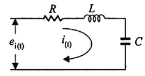
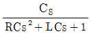
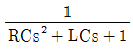
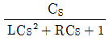
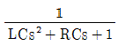
(정답률: 46%)
67. G(s)H(s)=K/(s2(s＋1)2)에서 근궤적의 수는?
- 4
- 2
- 1
- 0
(정답률: 66%)
68. 다음 중 G(jω)=1/(1＋j10ω)2로 주어지는 계의 절점 주파수는?
- 0.1[rad/sec]
- 1[rad/sec]
- 10[rad/sec]
- 11[rad/sec]
(정답률: 60%)
69. 다음 중 그림의 신호흐름 선도에서 C/R는?
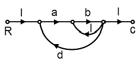
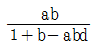
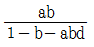
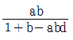
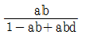
(정답률: 73%)
70. 그림과 같이 2중으로 된 블록선도의 출력 C는?
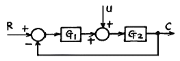
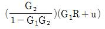
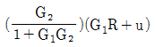
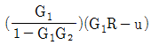
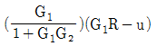
(정답률: 58%)
71. 분포정수회로에서 선로의 단위길이 당 저항을 100[Ω], 인덕턴스를 200[mH], 누설 컨덕턴스를 0.5[℧]라 할 때, 일그러짐이 없는 조건을 만족하기 위한 정전 용량은 몇 [μF]인가?
- 0.001[μF]
- 0.1[μF]
- 10[μF]
- 1000[μF]
(정답률: 58%)
72. 4단자 정수 A, B, C, D 중에서 임피던스의 차원을 가지는 것은?
- A
- B
- C
- D
(정답률: 70%)
73. 다음 파형의 라플라스 변환은?
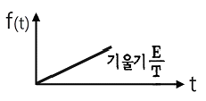
- E/s2
- E/Ts2
- E/s
- E/Ts
(정답률: 66%)
74. 성형(Y) 결선의 부하가 있다. 선간 전압 300[V]의 3상 교류를 인가했을 때 선전류가 40[A]이고 역률이 0.8이라면 리액턴스는 약 몇 [Ω]인가?
- 2.6[Ω]
- 4.3[Ω]
- 16.6[Ω]
- 35.6[Ω]
(정답률: 48%)
75. 다음 회로에서 전류 I는 몇 [A]인가?
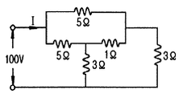
- 50[A]
- 25[A]
- 12.5[A]
- 10[A]
(정답률: 45%)
76. 비정현파 전압이 V=141.4sinωt＋70.7sin2ωt＋42.4sin3ωt[V]일 때 실효치는 약 몇 [V]인가?
- 13.4[V]
- 38.6[V]
- 115.7[V]
- 180.3[V]
(정답률: 65%)
77. 각 상전압이 Va=40sinωt[V], Vb=40sin(ωt＋90º)[V], Vc=40sin(ωt-90º)[V]일 때 실효치는 약 몇 [V]인가?(오류 신고가 접수된 문제입니다. 반드시 정답과 해설을 확인하시기 바랍니다.)
- 40 sinωt
- 40/3 sinωt
- 40/3 sin(ωt-90º)
- 4-/3 sin(ωt＋90º)
(정답률: 48%)
78. 다음과 같은 회로에서 t=0에서 스위치 S를 닫으면서 전압 E[V]를 가할 때 L 양단에 걸리는 전압 eL[V]는?
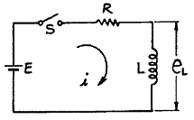
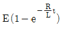
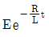
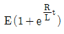
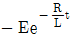
(정답률: 43%)
79. 정 K형 필터(여파기)에 있어서 임피던스 Z1, Z2는 공칭 임피던스 K와는 어떤 관계가 있는가?
- Z1Z2=K
- Z1/Z2=K
- Z1/Z2=K2
- Z1Z2=K2
(정답률: 47%)
80. 대칭 5상 교류에서 선간전압과 상전압간의 위상차는 몇 도인가?
- 27º
- 36º
- 54º
- 72º
(정답률: 69%)
5과목: 전기설비기술기준 및 판단기준
81. 지선을 사용하여 그 강도를 분담시켜서는 아니 되는 가공전선로 지지물은?
- 목주
- 철주
- 철근콘크리트주
- 철탑
(정답률: 66%)
82. 네온 방전관을 사용한 사용전압 12000V인 방전등에 사용되는 네온 변압기 외함의 접지공사로 알맞은 것은?(오류 신고가 접수된 문제입니다. 반드시 정답과 해설을 확인하시기 바랍니다.)
- 제 1종 접지공사
- 제 2종 접지공사
- 제 3종 접지공사
- 특별 제 3종 접지공사
(정답률: 59%)
83. 대지전압 100V 의 옥내전선로에서 분기회로의 절연저항은 최저 몇 [MΩ] 이상이어야 하는가?
- 0.1[MΩ]
- 0.2[MΩ]
- 0.3[MΩ]
- 0.4[MΩ]
(정답률: 67%)
84. 일반 주택 및 아파트 각 호실의 현관에 조명용 백열전등을 설치할 때 사용하는 타임스위치는 몇 [분] 이내에 소등되는 것을 시설하여야 하는가?
- 1분
- 3분
- 5분
- 10분
(정답률: 66%)
85. 사용전압이 15000V 이하인 가공전선로의 중성선을 다중접지 하는 경우에 1km 마다의 중성선과 대지사이의 합성 전기저항 값은 몇 [Ω] 이하가 되어야 하는가?
- 10[Ω]
- 15[Ω]
- 20[Ω]
- 30[Ω]
(정답률: 28%)
86. 고압용의 개폐기, 차단기, 피뢰기 기타 이와 유사한 기구로서 동작 시에 아크가 생기는 것은 목재의 벽 또는 천장 기타의 가연성 물체로부터 몇 [m] 이상 떼어 놓아야 하는가?
- 1.0[m]
- 1.2[m]
- 1.5[m]
- 2.0[m]
(정답률: 37%)
87. 3300[V] 고압 유도 전동기의 절연 내력 시험 전압은 최대 사용 전압의 몇 배를 10분간 가하는가?
- 1배
- 1.25배
- 1.5배
- 2배
(정답률: 61%)
88. 다음 중 수상 전선로를 시설하는 경우에 대한 설명으로 알맞은 것은?
- 사용전압이 고압인 경우에는 제 3종 캡타이어 케이블을 사용한다.
- 가공 전선로의 전선과 접속하는 경우, 접속점이 육상에 있는 경우에는 지표상 4m 이상의 높이로 지지물에 견고하게 붙인다.
- 가공 전선로의 전선과 접속하는 경우, 접속점이 수면 상에 있는 경우, 사용전압이 고압인 경우에는 수면상 5m 이상의 높이로 지지물에 견고하게 붙인다.
- 고압 수상 전선로에 지락이 생길 때를 대비하여 전로를 수동으로 차단하는 장치를 시설한다.
(정답률: 44%)
89. 발변전소의 주요 변압기에 반드시 시설하지 않아도 되는 계측 장치는?
- 전류계
- 전압계
- 전력계
- 역률계
(정답률: 73%)
90. 전력보안 통신설비는 가공 전선로로부터의 어떤 작용에 의하여 사람에게 위험을 줄 우려가 없도록 시설하여야 하는가?
- 정전유도작용 또는 전자유도작용
- 표피작용 또는 부식작용
- 부식작용 또는 정전유도작용
- 전압강하작용 또는 전자유도작용
(정답률: 70%)
91. B종 철주를 사용한 고압 가공전선로가 교류 전차선로와 교차하는 경우에 고압 가공전선이 교류 전차선 등의 위에 시설되는 때에 가공전선로의 경간은 몇 [m] 이하이어야 하는가?
- 60[m]
- 80[m]
- 100[m]
- 120[m]
(정답률: 28%)
92. 방직공장의 구내 도로에 220V 조명등용 가공전선로를 시설하고자 한다. 전선로의 경간은 몇 [m] 이하이어야 하는가?
- 20[m]
- 30[m]
- 40[m]
- 50[m]
(정답률: 49%)
93. 애자사용공사에 의한 고압옥내배선을 할 때 전선을 조영재의 면을 따라 붙이는 경우, 전선의 지지점간의 거리는 몇 [m] 이하이어야 하는가?
- 2[m]
- 3[m]
- 4[m]
- 5[m]
(정답률: 53%)
94. 시가지 등에서 특별고압 가공전선로의 시설과 관련이다. 특별고압 가공전선로용 지지물로 사용될 수 없는 것은? (단, 사용전압이 170000V 이하인 경우이다.)
- 철탑
- 철근콘크리트주
- 철주
- 목주
(정답률: 71%)
95. 유희용 전차의 시설에 대한 설명 중 틀린 것은?
- 전로의 사용전압은 직류의 경우 60V 이하, 교류의 경우 40V 이하일 것
- 전기를 공급하기 위하여 사용하는 접촉전선은 제 3레일 방식일 것
- 전기를 변성하기 위하여 사용하는 변압기의 1차 전압은 400V 미만일 것
- 전차안의 승압용 변압기의 2차 전압은 200V 이하일 것
(정답률: 53%)
96. 변압기에 의하여 특별고압전로에 결합되는 고압전로에는 사용전압의 3배 이하인 전압이 가하여진 경우에 어떤 장치를 그 변압기 단자에 가까운 1극에 설치하여야 하는가?
- 스위치 장치
- 계전 보호장치
- 누설전류 감지 장치
- 방전하는 장치
(정답률: 44%)
97. 백열전등 또는 방전등에 전기를 공급하는 옥내의 전로의 대지 전압은 몇 [V] 이하이어야 하는가?
- 440[V]
- 380[V]
- 300[V]
- 150[V]
(정답률: 76%)
98. 저압 전로에서 그 전로에 지락이 생겼을 경우에 0.5초 이내에 자동적으로 전로를 차단하는 장치를 시설하는 경우에는 자동차단기의 정격감도전류가 100mA인 경우 제 3종 접지공사의 접지 저항값은 몇 [Ω] 이하로 하여야 하는가? (단, 전기적 위험도가 높은 장소인 경우이다.)(오류 신고가 접수된 문제입니다. 반드시 정답과 해설을 확인하시기 바랍니다.)
- 50[Ω]
- 100[Ω]
- 150[Ω]
- 200[Ω]
(정답률: 46%)
99. 직류식 전기철도에서 배류시설에는 어떤 것을 사용하여야 하는가?
- 영상 변류기
- 선택 배류기
- 검류기
- 분류기
(정답률: 56%)
100. 특별고압용 변압기로서 변압기 내부고장이 생겼을 경우 반드시 자동차단 되어야 하는 변압기의 뱅크 용량은 몇 [kVA] 이상인가?
- 5000[kVA
- 7500[kVA
- 10000[kVA
- 15000[kVA
(정답률: 45%)
C = εA/d
여기서 ε는 진공의 유전율이고, A는 도체구의 단면적, d는 도체구 사이의 거리이다.
두 도체구의 반지름이 각각 2㎝, 4㎝이므로, 내부 도체구의 반지름은 2㎝, 외부 도체구의 반지름은 4㎝이다. 따라서 내부 도체구의 단면적은 π(2㎝)² = 4π, 외부 도체구의 단면적은 π(4㎝)² = 16π이다. 두 도체구 사이의 거리는 2㎝이므로, d = 0.02m이다.
따라서 내부 도체구와 외부 도체구 사이의 정전용량은 다음과 같다.
C = εA/d = (8.85×10^-12 F/m)(16π - 4π)/(0.02m) ≈ 4.45[pF]
따라서 정답은 "4.45[pF]"이다.